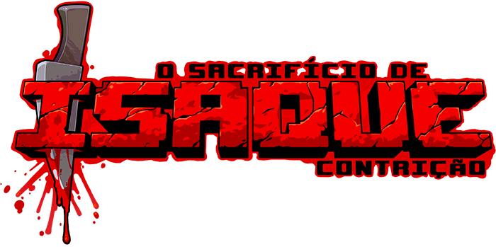
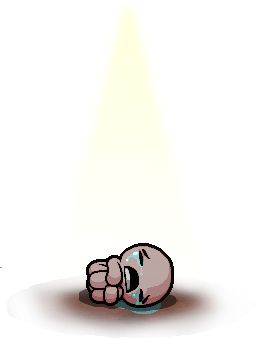
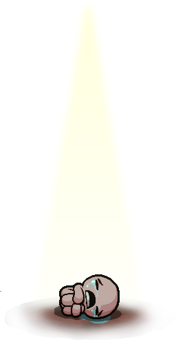

Quando a mãe de Isaque começa a ouvir a voz de Deus exigindo um sacrifício para provar sua fé, Isaque foge para o porão enfrentando multidões de inimigos enlouquecidos, irmãos e irmãs perdidos, seus medos e, eventualmente, sua mãe. AGORA EM PORTUGUÊS!

